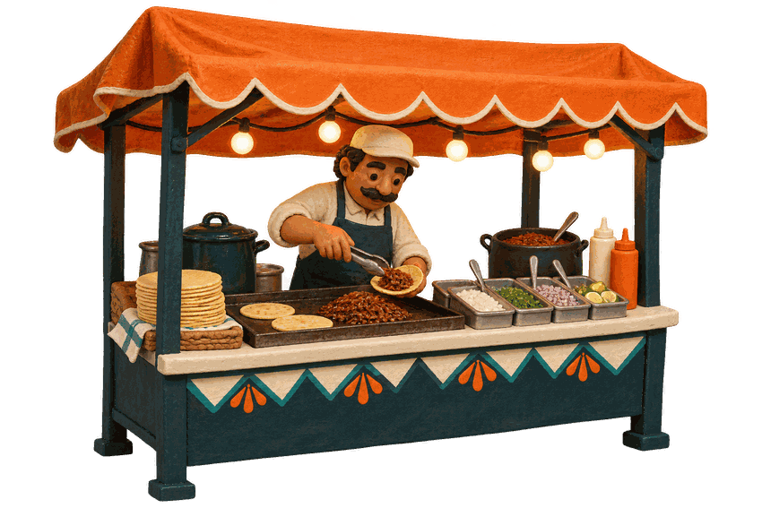
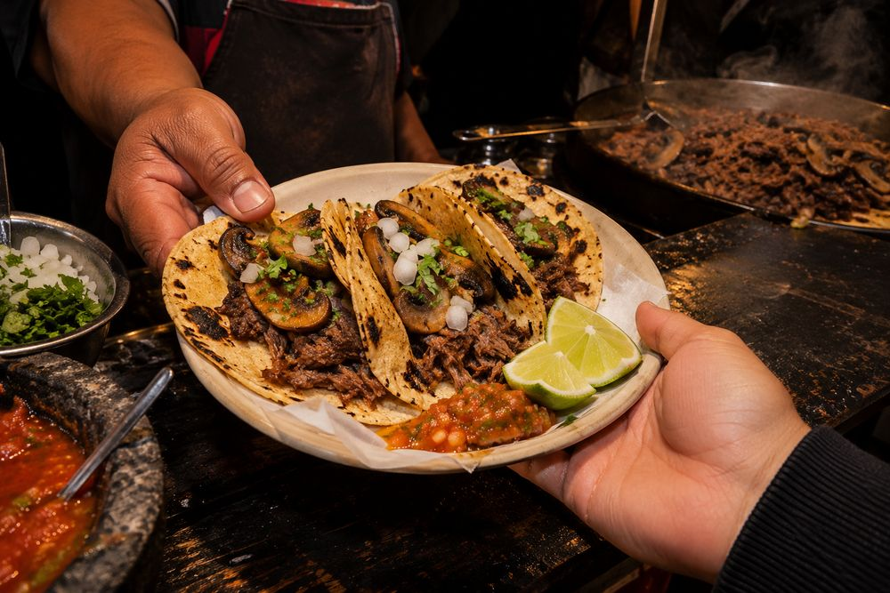
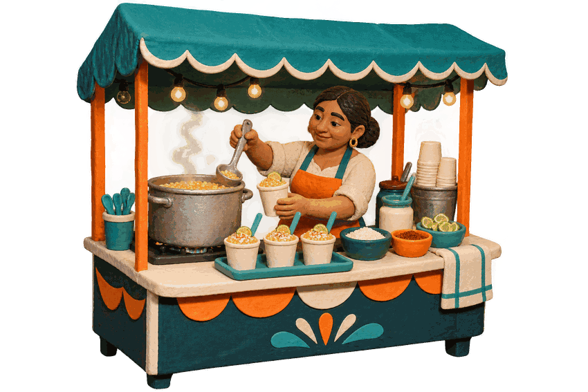
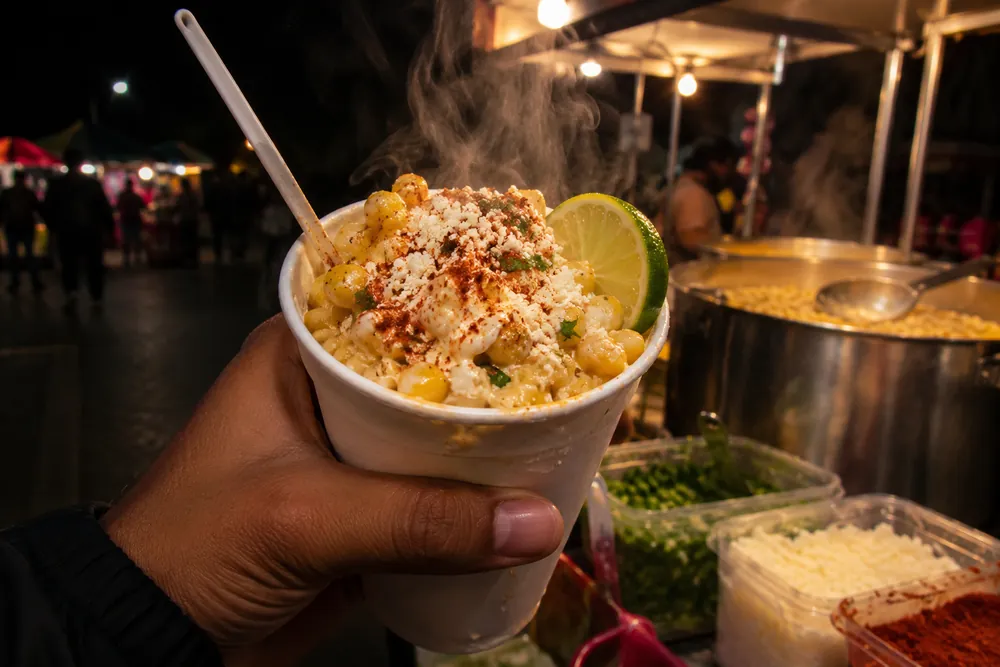
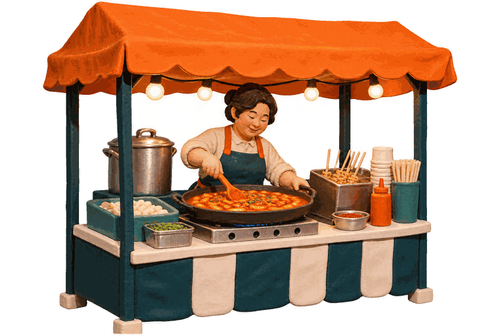
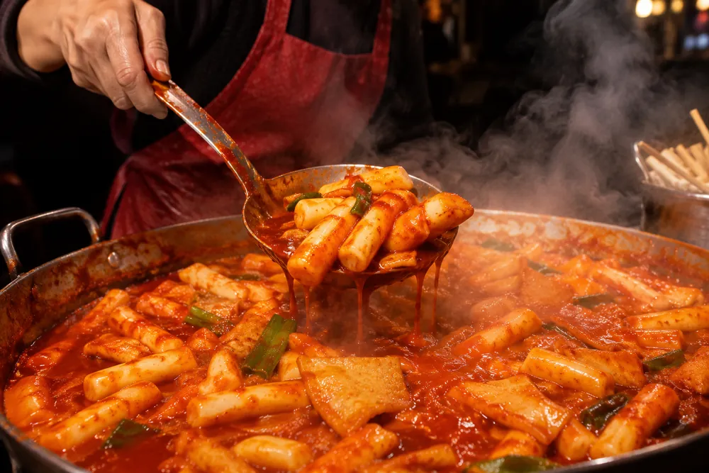
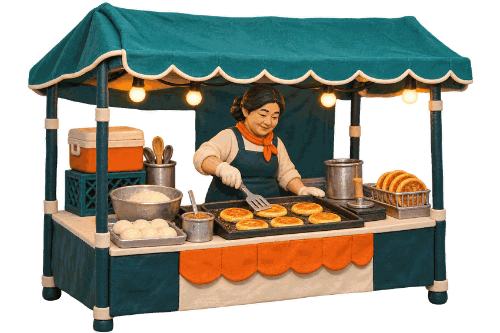
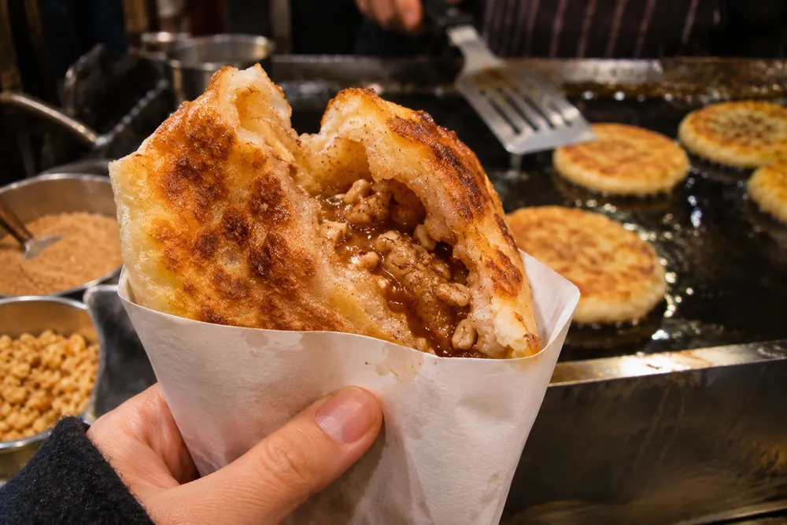
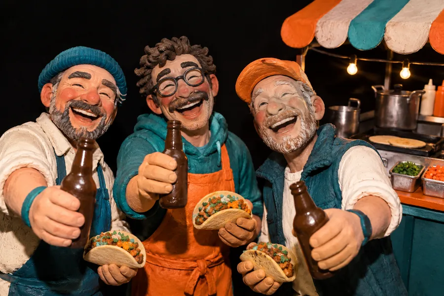
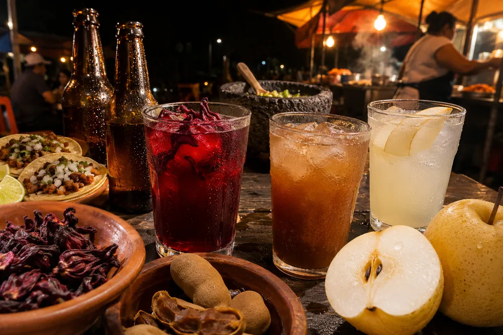

Mexiko × Südkorea · Ein Abend für euer Team
· – · Oberhafen Hamburg
Gruppentickets ansehenProgramm entdeckenVier Stände, viele Lieblingsgerichte
Vier Theken.
Ein Feierabend.
Vom ersten Taco bis zum letzten Hotteok. Holt euch etwas Warmes und kommt an unserer langen Tafel zusammen.
Mexiko
Taquería
Frisch von der Platte.
Warme Maistortillas mit geschmortem Rind oder gebratenen Pilzen. An der offenen Theke wird jeder Taco frisch belegt. Zwiebeln, Koriander und ein Spritzer Limette bringen alles zusammen. Ihr entscheidet selbst, wie viel Salsa dazukommt. Nehmt euren ersten Taco mit an die Tafel und entdeckt gemeinsam eure Lieblingsfüllung.


Mexiko
Esquites
Ein Becher voller Abend.
Aus dem dampfenden Topf kommt warmer Mais in den Becher. Dazu treffen Limette und Chili auf ein cremiges Topping und Käse. Ihr könnt direkt zusehen, wie eure Portion entsteht. Der kleine Stand ist ein guter Zwischenstopp, während ihr auf die anderen wartet und schon die nächste Kostprobe plant.


Südkorea
Tteokbokki
Wärme zum Weitergeben.
In der großen Pfanne ziehen weiche Reiskuchen durch die würzige Sauce. Der Duft führt euch direkt zur Theke. Hier gehört die Zubereitung zum Erlebnis: rühren, abschmecken, schöpfen. Holt euch eine Portion und erzählt am Tisch, was ihr gerade entdeckt habt. Für Fragen zu Zutaten ist das Team am Stand da.


Südkorea
Hotteok
Noch Platz für süß?
Auf der heißen Platte werden die gefüllten Pfannkuchen goldbraun. Innen wartet die süße Zimtfüllung. Ein Hotteok ist der warme Abschluss eurer Runde und ein guter Grund, noch etwas länger zusammenzusitzen. Schaut beim Wenden zu, holt euch euren Nachtisch und nehmt ihn mit zurück an die lange Tafel.


Zusammen schmeckt’s besser
So schmeckt Feierabend.
Fiktive Beispielstimmen zum Studienprojekt

„Sechs Leute. Sechs Lieblingsgerichte.“
„Der Hotteok war mein Highlight.“
„Wir blieben länger als geplant.“
„Tacos und ein kaltes Bier. Passt.“
„Die Birnenlimo? Unbedingt probieren.“
„Das machen wir als Team wieder.“
Ein Hoch auf den Feierabend
Was kommt ins Glas?
An jedem Stand gibt’s Softdrinks und Bier aus dem jeweiligen Land.
- Taquería · Mexiko
- Agua de Jamaica und mexikanisches Lager.
- Esquites · Mexiko
- Tamarindenlimonade und mexikanisches Lager.
- Tteokbokki · Südkorea
- Koreanische Birnenlimonade und koreanisches Lager.
- Hotteok · Südkorea
- Koreanisches Reisgetränk und koreanisches Lager.

17. September 2027 · Hamburg
Kommt zusammen.
Bringt euer Team mit. Den Tisch teilen wir.
Gruppentickets ansehenSo findet ihr den Oberhafen